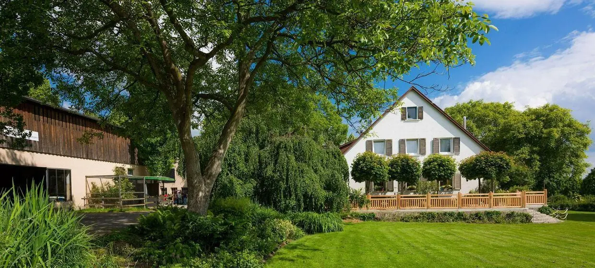
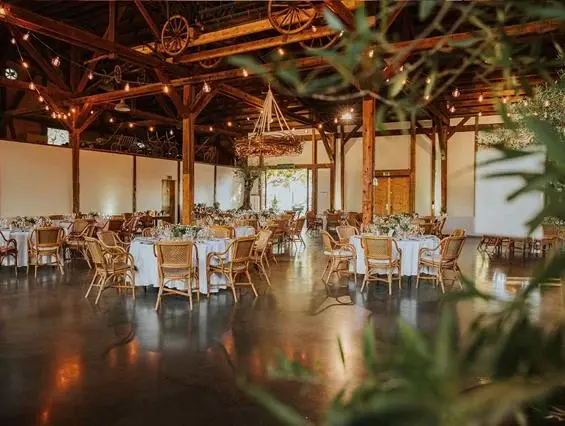
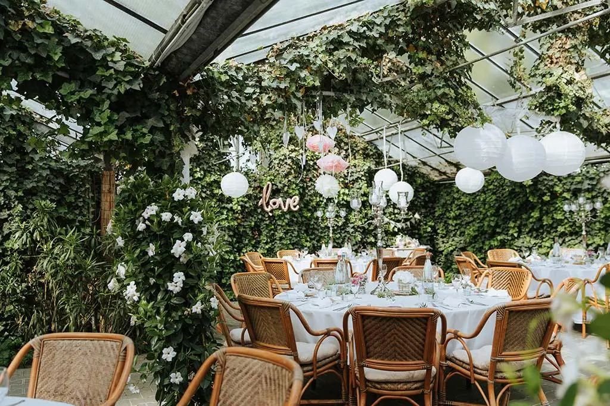

Unsere Hochzeitslocation
Sonnenhof Eventlocation
Hier feiern Marc & Julia ihren besonderen Tag.



Der Sonnenhof bietet die perfekte Kulisse für unsere Hochzeit – mit liebevoll gestalteten Räumlichkeiten, einem schönen Außenbereich und einer entspannten, natürlichen Atmosphäre.
Parkmöglichkeiten
Es stehen ausreichend Parkplätze direkt an der Location zur Verfügung.
Die Parkplätze sind kostenlos.
Übernachtungsmöglichkeiten
Direkt am Sonnenhof gibt es Übernachtungsmöglichkeiten.
Diese sind jedoch begrenzt.
Bei Interesse meldet euch bitte per PN bei Julia.
Programm für Kinder
Auch für unsere kleinen Gäste ist gesorgt.
Es wird ein abwechslungsreiches Programm angeboten, zum Beispiel Pony streicheln, einen Spielbereich und weitere Aktivitäten in der Natur.
Anfahrt
Adresse
Sonnenhof Eventlocation
Sonnenhof 1
70378 Stuttgart
Mit dem Auto
Der Sonnenhof ist gut mit dem Auto erreichbar. Parkplätze stehen direkt an der Location zur Verfügung.
Anfahrt über Google Maps